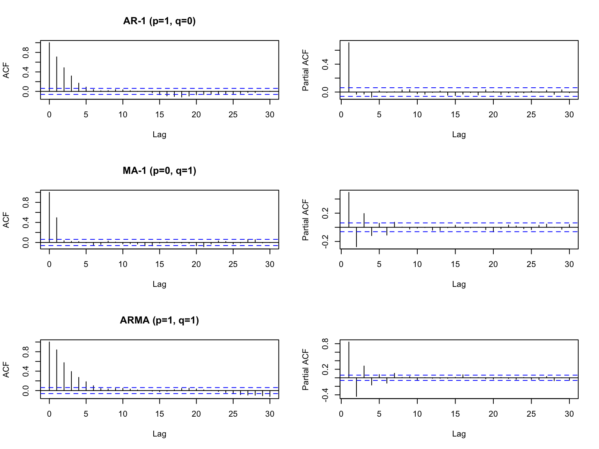
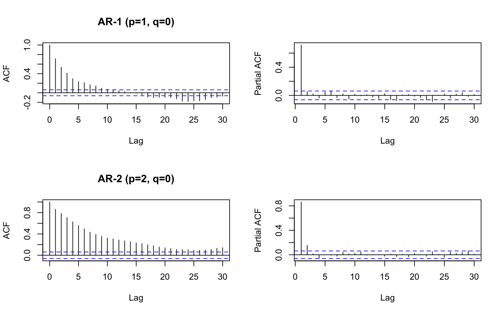
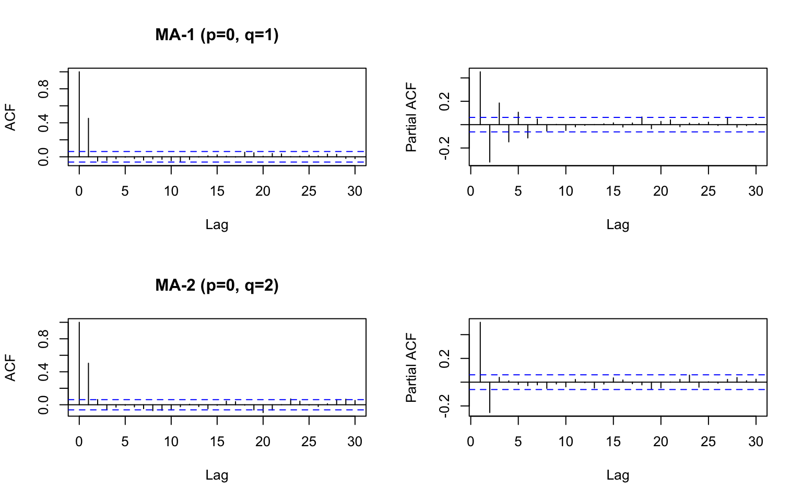
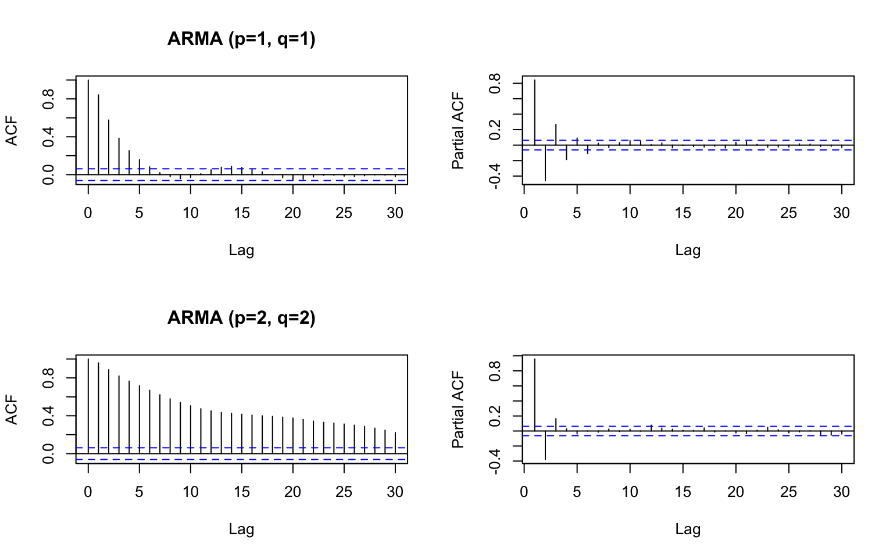

3.3 Model structure
We are now at step A3 and A4 of the Box-Jenkins Method. Note we did not address seasonality since we are working with yearly data.
A. Model form selection
- Evaluate stationarity and seasonality
- Selection of the differencing level (d)
- Selection of the AR level (p)
- Selection of the MA level (q)
B. Parameter estimation
C. Model checking
Much of this will be automated when we use the forecast package
3.3.1 AR and MA lags
Step A3 is to determine the number of \(p\) lags in the AR part of the model:
\[x_t = \phi_1 x_{t-1} + \phi_2 x_{t-2} + ... + \phi_p x_{t-p} + e_t\]
Step A4 is to determine the number of \(q\) lags in the MA part of the model:
\[e_t = \eta_t + \theta_1 \eta_{t-1} + \theta_2 \eta_{t-2} + ... + \theta_q \eta_{t-q},\quad \eta_t \sim N(0, \sigma)\]
3.3.2 Model order
For an ARIMA model, the number of AR lags, number of differences, and number of MA lags is called the model order or just order.
Examples. Note \(e_t \sim N(0,\sigma)\)
- order (0,0,0) white noise
\[x_t = e_t\]
- order (1,0,0) AR-1 process
\[x_t = \phi x_{t-1} + e_t\]
- order (0,0,1) MA-1 process
\[x_t = e_t + \theta e_{t-1}\]
- order (1,0,1) AR-1 MA-1 process
\[x_t = \phi x_{t-1} + e_t + \theta e_{t-1}\]
- order (0,1,0) random walk
\[x_t - x_{t-1} = e_t\]
which is the same as
\[x_t = x_{t-1} + e_t\]
3.3.3 Choosing the AR and MA levels
Method #1 use the ACF and PACF functions
The ACF plot shows you how the correlation between \(x_t\) and \(x_{t+p}\) decrease as \(p\) increases. The PACF plot shows you the same but removes the autocorrelation due to lags less that \(p\).

If your ACF and PACF look like the top panel, it is AR-p. The first lag where the PACF is below the dashed lines is the \(p\) lag for your model.

If it looks like the middle panel, it is MA-p. The first lag where the ACF is below the dashed lines is the \(q\) lag for your model.

If it looks like the bottom panel, it is ARMA and this approach doesn’t work.

Method #2 Use formal model selection
This weighs how well the model fits against how many parameters your model has. We will use this approach.
The auto.arima() function in the forecast package in R allows you to easily estimate the \(p\) and \(q\) for your ARMA model. We will use the first difference of the anchovy data since our stationarity diagnostics indicated that a first difference makes our time series stationary.
anchovy.diff1 = diff(anchovy87$log.metric.tons)
forecast::auto.arima(anchovy.diff1)## Series: anchovy.diff1
## ARIMA(0,0,1) with non-zero mean
##
## Coefficients:
## ma1 mean
## -0.5731 0.0641
## s.e. 0.1610 0.0173
##
## sigma^2 estimated as 0.03583: log likelihood=6.5
## AIC=-6.99 AICc=-5.73 BIC=-3.58The output indicates that the ‘best’ model is a MA-1 with a non-zero mean. “non-zero mean” means that the mean of our data (anchovy.diff1) is not zero.
auto.arima() will also estimate the amount of differencing needed.
forecast::auto.arima(anchovy87ts)## Series: anchovy87ts
## ARIMA(0,1,1) with drift
##
## Coefficients:
## ma1 drift
## -0.5731 0.0641
## s.e. 0.1610 0.0173
##
## sigma^2 estimated as 0.03583: log likelihood=6.5
## AIC=-6.99 AICc=-5.73 BIC=-3.58The output indicates that the ‘best’ model is a MA-1 with first difference. “with drift” means that the mean of our data (anchovy87) is not zero. This is the same model but the jargon regarding the mean is different.
More examples
Let’s try fitting to some simulated data. We will simulate with arima.sim(). We will specify no differencing.
set.seed(100)
a1 = arima.sim(n=100, model=list(ar=c(.8,.1)))
forecast::auto.arima(a1, seasonal=FALSE, max.d=0)## Series: a1
## ARIMA(1,0,0) with non-zero mean
##
## Coefficients:
## ar1 mean
## 0.6928 -0.5343
## s.e. 0.0732 0.2774
##
## sigma^2 estimated as 0.7703: log likelihood=-128.16
## AIC=262.33 AICc=262.58 BIC=270.14The ‘best-fit’ model is simpler than the model used to simulate the data.
How often is the ‘true’ model is chosen?
Let’s fit 100 simulated time series and see how often the ‘true’ model is chosen. By far the correct type of model is selected, AR-p, but usually a simpler model of AR-1 is chosen over AR-2 (correct) most of the time.
save.fits = rep(NA,100)
for(i in 1:100){
a1 = arima.sim(n=100, model=list(ar=c(.8,.1)))
fit = forecast::auto.arima(a1, seasonal=FALSE, max.d=0, max.q=0)
save.fits[i] = paste0(fit$arma[1], "-", fit$arma[2])
}
table(save.fits)## save.fits
## 1-0 2-0 3-0 4-0
## 74 20 5 13.3.4 Trace = TRUE
You can see what models that auto.arima() tried using trace=TRUE. The models are selected on AICc by default and the AICc value is shown next to the model.
forecast::auto.arima(anchovy87ts, trace=TRUE)##
## ARIMA(2,1,2) with drift : 0.9971438
## ARIMA(0,1,0) with drift : -1.582738
## ARIMA(1,1,0) with drift : -3.215851
## ARIMA(0,1,1) with drift : -5.727702
## ARIMA(0,1,0) : -1.869767
## ARIMA(1,1,1) with drift : -2.907571
## ARIMA(0,1,2) with drift : -3.219136
## ARIMA(1,1,2) with drift : -1.363802
## ARIMA(0,1,1) : -1.425496
##
## Best model: ARIMA(0,1,1) with drift## Series: anchovy87ts
## ARIMA(0,1,1) with drift
##
## Coefficients:
## ma1 drift
## -0.5731 0.0641
## s.e. 0.1610 0.0173
##
## sigma^2 estimated as 0.03583: log likelihood=6.5
## AIC=-6.99 AICc=-5.73 BIC=-3.583.3.5 stepwise = FALSE
By default, step-wise selection is used and an approximation is used for the models tried in the model selection step. For a final model selection, you should turn these off.
forecast::auto.arima(anchovy87ts, stepwise=FALSE, approximation=FALSE)## Series: anchovy87ts
## ARIMA(0,1,1) with drift
##
## Coefficients:
## ma1 drift
## -0.5731 0.0641
## s.e. 0.1610 0.0173
##
## sigma^2 estimated as 0.03583: log likelihood=6.5
## AIC=-6.99 AICc=-5.73 BIC=-3.583.3.6 Summary
Once you have dealt with stationarity, you need to determine the order of the model: the AR part and the MA part.
Although you could simply use
auto.arima(), it is best to runacf()andpacf()on your data to understand it better.- Does it look like a pure AR process?
Also evaluate if there are reasons to assume a particular structure.
Are you using an established model form, from say another paper?
Are you fitting to a process that is fundamentally AR only or AR + MA?